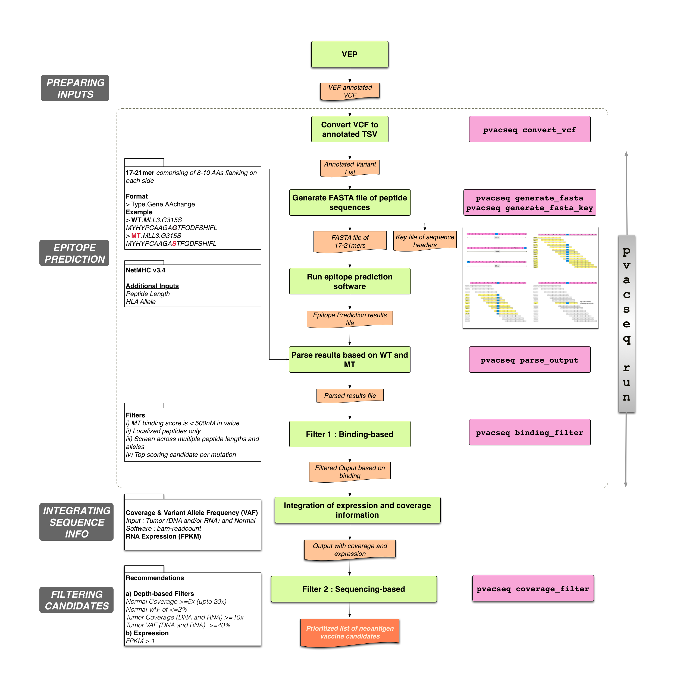
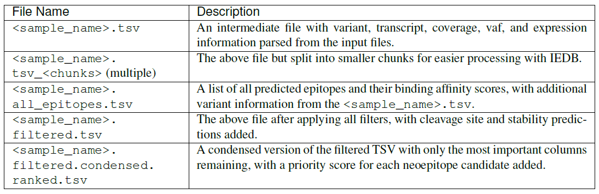

1）pVACseq

1.1. pVACseq 介绍
1.1.1 软件下载
1）文献地址：pVAC-Seq: A genome-guided in silico approach to identifying tumor neoantigens.
2）github地址：https://github.com/BioXiao/pVAC-Seq
3）依赖数据： DNA- and RNA-Seq
4）安装： pip install pvacseq,更新： pip install pvacseq --upgrade
5）理论基础：1）比较突变肽、野生肽与MHC的亲和力。
2）比较gene表达量。
6）分析数据要求：1）非同义的体细胞突变，并且要注释上氨基酸变化和转录本信息。（VEP注释）
2）需要HLA分型结果。（依据正常组织的数据）
3）需要基因表达量结果。
7）实现步骤：1） performing epitope prediction
2） integrating sequencing-based information
3） lastly, filtering neoantigen candidates
1.1.2 数据准备：
2）adding coverage data to your vcf (https://blog.csdn.net/bio_meimei/article/details/89948165) （ bam-readcount）
3）adding expression data to your vcf (https://blog.csdn.net/bio_meimei/article/details/89949332) （ cufflinks ）
4）creating a phased vcf of proximal variants(https://blog.csdn.net/bio_meimei/article/details/89949362)
1.2. Input File Preparation
1.2.1Running VEP
2）下载plugins：git clone https://github.com/Ensembl/VEP_plugins.git
3）非官方plugins下载，pvacseq install_vep_plugin <VEP plugins directory>
Example VEP Command
./vep \
--input_file <input VCF> --output_file <output VCF> \
--format vcf --vcf --symbol --terms SO --tsl\
--hgvs --fasta <reference build fasta file location> \
--offline --cache [--dir_cache <VEP cache directory>] \
--plugin Downstream --plugin Wildtype \
[--dir_plugins <VEP_plugins directory>] [--pick] [--transcript_version]
The --format vcf option specifies that the input file is in VCF format.
• The --vcf option will result in the output being written in VCF format.
• The --symbol option will include gene symbol in the annotation.
• The --terms SO option will result in Sequence Ontology terms being used for the consequences.
• The --tsl option adds transcript support level information to the annotation.
• The --hgvs option will result in HGVS identifiers being added to the annotation.
• Using the --hgvs option requires the usage of the --fasta argument to specify the location of the reference genome build fasta file.
• The --offline option will eliminate all network connections for speed and/or privacy.
• The --cache option will result in the VEP cache being used for annotation.
• The --plugin Downstream option will run the Downstream plugin which will compute the downstream protein sequence after a frameshift.
• The --plugin Wildtype option will run the Wildtype plugin which will include the transcript protein sequence in the annotation.
• The --dir_cache <VEP cache directory> option may be needed if the VEP cache was downloaded to a different location than the default. The default location of the VEP cache is at $HOME/.vep.
• The --dir_plugins <VEP_plugins directory> option may need to be set depending on where the VEP_plugins were installed to.
• The --pick option might be useful to limit the annotation to the “top” transcript for each variant (the one for which the most dramatic consequence is predicted). Otherwise, VEP will annotate each variant with all possible transcripts. pVACseq will provide predictions for all transcripts in the VEP CSQ field. Running VEP without the --pick option can therefore drastically increase the runtime of pVACseq.
• The --transcript_version option will add the transcript version to the transcript identifiers. This option might be needed if you intend to annotate your VCF with expression information. Particularly if your expression estimation tool uses versioned transcript identifiers (e.g. ENST00000256474.2).
1.2.2 Adding coverage data to your VCF
pip install vcf-annotation-tools. (The vcf-readcount-annotator is part of the vcf-annotation-tools package.)
1）Tumor DNA Coverage （sample_name，DP，AD，AF） (# acturally this step can be skip as the mutect2 provide the information of coverage)
2）Tumor RNA Coverage （sample_name，RDP，RAD，RAF）
3）Normal DNA Coverage（need to be a multi-sample (tumor/normal)VCF，sample_name，--normal-sample-name）
nocov.vcf-->vcf-readcount-annotator-->bam-readcount -->cov.vcf
work:
1)vt decompose -s <input_vcf> -o <decomposed_vcf>
2)bam-readcount -f <reference_fasta> -l <site_list> <bam_file> [-i] [-b 20]
3)bam_readcount_helper.py
4)vcf-readcount-annotator
# gene_expn_file: <genes.fpkm_tracking file from Cufflinks>
# transcript_expn_file: <isoforms.fpkm_tracking file from Cufflinks>
1.2.3 Adding expression data to your VCF
1)Transcript Expression （single-sample VCF or sample_name，TX）
2）Gene Expression （single-sample VCF or sample_name，GX）
work：
1）vcf-expression-annotator input_vcf expression_file kallisto|stringtie|cufflinks|custom gene|transcript
# normal_snvs_coverage_file: <bam-readcount output file for normal BAM and snvs>
# normal_indels_coverage_file: <bam-readcount output file for normal BAM and indels>
# tdna_snvs_coverage_file: <bam-readcount output file for tumor DNA BAM and snvs>
# tdna_indels_coverage_file: <bam-readcount output file for tumor DNA BAM and indels>
# trna_snvs_coverage_file: <bam-readcount output file for tumor RNA BAM and snvs>
# trna_indels_coverage_file: <bam-readcount output file for tumor RNA BAM and indels>
1.2.4 Creating a phased VCF of proximal variants
work：
1）Create the reference dictionary：java -jar picard.jar CreateSequenceDictionary R=reference.fa O=reference.dict
2）Combine somatic and germline variants using GATK’s CombineVariants
/usr/bin/java -Xmx16g -jar /opt/GenomeAnalysisTK.jar \
-T CombineVariants \
-R reference.fa \
--variant germline.vcf \
--variant somatic.vcf \
-o combined_somatic_plus_germline.vcf \
--assumeIdenticalSamples
3）Sort combined VCF using Picard
/usr/bin/java -Xmx16g -jar /opt/picard/picard.jar SortVcf \
I=combined_somatic_plus_germline.vcf \
O=combined_somatic_plus_germline.sorted.vcf \
SEQUENCE_DICTIONARY=reference.dict
4）Phase variants using GATK’s ReadBackedPhasing
/usr/bin/java -Xmx16g -jar /opt/GenomeAnalysisTK.jar \
-T ReadBackedPhasing \
-R reference.fa \
-I tumor.bam \
--variant combined_somatic_plus_germline.sorted.vcf \
-L combined_somatic_plus_germline.sorted.vcf \
-o phased.vcf
5）bgzip and index the phased VCF
bgzip -c phased.vcf > phased.vcf.gz
tabix -p vcf phased.vcf.gz
6）bgzip and index the input VCF
bgzip -c input.vcf > input.vcf.gz
tabix -p vcf input.vcf.gz
1.3 Getting Started
1.3.1 pvac-seq run
pvacseq run \
<example_data_dir>/input.vcf \
Test \
HLA-A*02:01,HLA-B*35:01,DRB1*11:01 \
MHCflurry MHCnuggetsI MHCnuggetsII NNalign NetMHC PickPocket SMM SMMPMBEC SMMalign \
<output_dir> \
-e 8,9,10
1.3.2 Running pVACseq using Docker
dockers版本：griffithlab/pvactools on DockerHub （includes installations of the IEDB class I and class II tools at /opt/iedb）
Please note that our Docker container already includes installations of the IEDB class I and class II tools at /opt/iedb (--iedb-install-directory /opt/iedb).
docker run \
-v /local/path/to/example_data_dir:/pvacseq_example_data \
-v /local/path/to/output_dir:/pvacseq_output_data \
-it griffithlab/pvactools
work:
pvacseq run \
/pvacseq_example_data/input.vcf \ "input_file"
Test \ "sample_name"
HLA-A*02:01,HLA-B*35:01,DRB1*11:01 \ "allele"
MHCflurry MHCnuggetsI MHCnuggetsII NNalign NetMHC PickPocket SMM SMMPMBEC SMMalign \ "[{MHCflurry,MHCnuggetsI,MHCnuggetsII,NNalign,NetMHC,NetMHCIIpan,NetMHCcons,NetMHCpan,PickPocket,SMM,SMMPMBEC,SMMalign} ...]"
/pvacseq_output_data \ "output_dir"
-e 8,9,10 "EPITOPE_LENGTH" （8-11）
--iedb-install-directory /opt/iedb "IEDB_INSTALL_DIRECTORY"
1.4 out files


1.5 summary

1.6）示例
/mnt/X500/farmers/linhx/neoantigen/wes_rna/4.run_pvactool/seq_run.sh
1.7）question
1）发生了起始密码子突变的基因要不要考虑FS后产生新的ATG，导致新肽的产生？要不要考虑下游同时发生的移码突变？
pVAC-Seq makes predictions for all transcripts of a variant that were annotated as missense_variant, inframe_insertions, inframe_deletion, or frameshift_variant by VEP as long as the transcript was not also annotated as start_lost。
2）